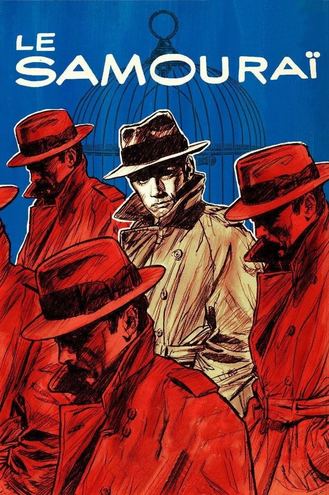

Fiche technique
- Titre
- Le Samouraï
- Réalisation
- Jean-Pierre Melville
- Scénario
- Jean-Pierre Melville, avec Georges Pellegrin aux dialogues ; générique créditant le roman The Ronin de Joan McLeod23
- Image
- Henri Decaë
- Montage
- Monique Bonnot, Yolande Maurette
- Décors
- François de Lamothe
- Musique
- François de Roubaix, orchestration et direction d'Éric Demarsan11
- Interprétation
- Alain Delon (Jef Costello), François Périer (le commissaire), Nathalie Delon (Jane Lagrange), Cathy Rosier (Valérie), Michel Boisrond, Jacques Leroy
- Production
- Filmel (Paris), CICC, TC Productions, Fida Cinematografica (Rome) ; producteur Raymond Borderie3
- Restauration
- Pathé, 2023 ; ressortie en salles par Les Films du Camélia3

Synopsis
Jef Costello vit seul dans une chambre grise de Paris, avec un lit, un lavabo, quelques bouteilles d'eau minérale et un bouvreuil en cage. Il est tueur à gages, et son métier consiste surtout à fabriquer des alibis : il vole une voiture, en change les plaques, se fait voir de témoins choisis, et rentre chez lui à l'heure dite.
Le contrat qu'on lui confie — abattre le patron d'un club de nuit — se déroule sans accroc, à un détail près : en sortant du bureau, il croise la pianiste de l'établissement, qui le regarde en face. Raflé le soir même dans un coup de filet, présenté à une parade d'identification, il est relâché faute de charges — la pianiste, contre toute attente, ne le reconnaît pas.
Commence alors une double traque. Un commissaire obstiné, convaincu de sa culpabilité, entreprend de démonter son alibi et fait truffer sa chambre d'un micro. Et ses commanditaires, jugeant qu'un tueur repéré est un tueur périmé, décident de le supprimer. Jef n'a plus qu'à jouer, seul, la seule partie qui lui reste — celle de sa propre sortie.
Contexte de production
Melville aurait écrit le scénario dès 1963, plusieurs années avant de le tourner2. Le projet ne rencontre son acteur que par ricochet : Alain Delon avait décliné le rôle de Gerbier dans L'Armée des ombres, et Melville lui propose alors celui-ci2. L'anecdote de leur rencontre est devenue légende, mais elle est rapportée de première main : Melville lit le scénario à voix haute chez Delon, qui l'interrompt au bout de sept minutes et demie — « ça fait sept minutes et demi que vous lisez votre scénario et il n'y a pas encore l'ombre d'un dialogue » — et accepte immédiatement210. Le rôle sera d'ailleurs écrit pour lui1. Melville double la mise en distribuant François Périer, comédien identifié au registre comique, dans le rôle du commissaire — à contre-emploi assumé1.
Le film s'ouvre sur une citation attribuée au Bushido : « Il n'y a pas de plus profonde solitude que celle du samouraï, si ce n'est celle du tigre dans la jungle, peut-être… ». Aucun texte japonais ne la contient : Melville l'a écrite lui-même4. Le générique crédite par ailleurs un roman, The Ronin de Joan McLeod, que les fiches officielles reprennent3 mais que personne n'a jamais retrouvé — Melville, de son côté, présentait le scénario comme original24. Le film le plus rigoureusement méthodique du cinéma français repose donc sur deux sources qui n'existent probablement pas. Ce n'est pas une faute de fabrication : c'est le principe même de l'œuvre, où le code tient lieu de vérité.
Le tournage est frappé par une catastrophe. Dans la nuit du 28 au 29 juin 1967, un incendie ravage les studios de la rue Jenner, dans le XIIIe arrondissement, que Melville avait fondés en 1947 et où il vivait9. Le décorateur François de Lamothe a laissé de cette matinée une image que le cinéma n'aurait pas osé écrire : Melville « encore en pyjama, complètement trempé par les lances d'incendie, errant hébété parmi les débris fumants », serrant contre lui son chat Griffaulait, seul bien sauvé9. Melville a soupçonné un acte criminel sans jamais pouvoir l'établir19. Le film s'achève dans d'autres studios19. Une source consacrée à la production ajoute que le bouvreuil du film — la seule créature vivante de la chambre de Jef — a péri dans l'incendie10 ; l'information n'a pas pu être recoupée ailleurs et est donnée ici sous cette réserve.
Cette possession d'un studio n'était pas un caprice de propriétaire : elle plaçait Melville dans un club minuscule — celui des cinéastes maîtres de leur outil, avec Chaplin et Pagnol9 — et fondait l'indépendance dont il faisait sa fierté. « Je suis le loup solitaire du cinéma français », déclarait-il à Sight and Sound quelques mois après la sortie, ajoutant avoir refusé cinquante-quatre propositions américaines6.
Structure narrative
Le récit tient en trois mouvements d'une régularité de métronome : la préparation et l'exécution du contrat ; la garde à vue et le démontage de l'alibi ; la traque croisée et la sortie. Mais la véritable trouvaille de construction est ailleurs : le film s'ouvre sur près de trois minutes sans une parole, sur un plan fixe où l'on distingue à peine, dans la pénombre d'une chambre, un homme allongé sur un lit10. Melville, interrogé sur cette ouverture, en donne la clé sans détour : Jef est « déjà disposé, déjà mort » dès ce premier plan, et le film n'est que le déroulé d'une mort déjà advenue6.
De là vient la sensation, unique, que le suspense de Le Samouraï ne fonctionne jamais comme celui d'un thriller. On n'attend pas de savoir si Jef s'en sortira : on regarde se refermer un mécanisme. Melville organise pour cela des « mondes parallèles qui ne se chevauchent jamais »6 — celui de la police, celui des commanditaires, celui de Jef — dont chacun exécute son propre protocole. Le commissaire, incarnation d'une logique cartésienne française, procède par déduction ; les commanditaires par élimination ; Jef, lui, reste une « énigme complète »6, un personnage dont on ne saura ni le passé, ni les motifs, ni même s'il éprouve quelque chose.
Les rares informations narratives passent par des scènes de pure procédure : la fabrication de l'alibi, la parade d'identification, la pose du micro dans la chambre, la filature dans le métro. Le récit avance par vérification de gestes techniques, non par révélation psychologique. C'est un scénario écrit comme un procès-verbal — et l'on comprend pourquoi son auteur en décrivait le point de départ comme la « description méticuleuse, presque clinique, du comportement d'un tueur à gages »6.
Mise en scène et procédés techniques
La couleur retirée de la couleur. L'ambition affichée de Melville était de « faire un film en couleur en noir et blanc, dans lequel il n'y aurait qu'un tout petit détail pour nous rappeler qu'on regarde bien un film en couleur » — et avec Henri Decaë, il refuse jusqu'à ce détail dans la longue séquence d'ouverture10. Le résultat est cette photographie que Jonathan Rosenbaum décrit comme trouvant « quelque chose de bleu-gris métallique dans pratiquement chaque plan »7, et que Jason Wood résume en « bleus et gris acier » d'une atmosphère spectrale5. Le méthodisme de l'entreprise va loin : pour la scène où Delon manipule des billets, Melville aurait fait photocopier des coupures en noir et blanc plutôt que d'introduire à l'écran la seule tache de couleur saturée du film10.
Le métro comme dispositif. La grande séquence de filature — la police suivant Jef de rame en rame, de correspondance en correspondance — a été tournée « caméra à la main sans trucage », à « l'éclairage ordinaire du métro », et a demandé une semaine de travail6. Elle est le cœur formel du film : un réseau, des embranchements, des agents postés aux nœuds, et un homme qui croit encore pouvoir choisir sa direction. Le métro, que Jef maîtrise mieux que quiconque, se retourne en piège — l'espace qu'il contrôle devient celui qui l'enferme4.
Le silence et la musique. Melville coupe le dialogue jusqu'à l'os ; Wood note qu'« aucune parole, aucun regard, aucun geste n'est superflu »5. La partition de François de Roubaix accompagne ce dépouillement au lieu de le combler : seize minutes trente-quatre de musique pour tout le film, sans effet ni synthétiseur, sur un effectif d'orchestre à cordes, vibraphone, orgue Hammond, accordéon, flûte, trompette et piano11. C'est une musique qui ne raconte pas l'action : elle souligne le rituel et l'inéluctable.
Je ne m'intéresse pas au réalisme. Tous mes films reposent sur le fantastique. Jean-Pierre Melville, entretien avec Rui Nogueira et François Truchaud, Sight and Sound, été 19686
Cette déclaration éclaire tout le reste. Les décors — la chambre nue, le club aux surfaces froides, le commissariat aux perspectives interminables — ne cherchent pas la vraisemblance sociologique mais une abstraction de conte. Melville refusait d'ancrer ses films dans une époque datable : d'où, disait-il, l'absence de minijupes dans un film tourné en 19676. Le Paris du Samouraï est un Paris mental, où il pleut toujours un peu et où personne ne rit.
Personnages principaux
Jef Costello. Il est moins un personnage qu'une méthode. On le connaît par ses gestes : le passage de la main sur le bord du chapeau, le trousseau de passe-partout essayé un par un dans une portière, la façon de retirer l'imperméable avant de s'allonger. Melville en donne pourtant une lecture affective, presque romantique : Jef est « amoureux de sa propre mort », et la femme en noir qui traverse le film relève d'un imaginaire cocteauien assumé6 — Melville revendiquait une affinité intellectuelle avec Cocteau depuis Les Enfants terribles6. Delon, choisi pour une beauté que Wood qualifie d'androgyne5, y compose l'un des rares emplois de cinéma où l'inexpressivité est le sujet même.
Le commissaire. Sans nom, sans vie privée, il est le double administratif de Jef : même patience, même méthode, mêmes moyens douteux. La pose du micro dans la chambre, l'organisation d'un faux témoignage, la manipulation de Jane : le film met en évidence que policier et tueur usent des mêmes tactiques4. La seule différence est que l'un a un mandat. Périer, arraché à la comédie, joue cela sans moralisme, avec une jubilation d'artisan.
Jane Lagrange. Interprétée par Nathalie Delon, elle fournit l'alibi et encaisse tout : les pressions de la police, l'indifférence de Jef, l'humiliation d'être un élément du dispositif. Sa dernière réplique — l'aveu qu'elle ment par attachement, non par peur — est l'un des rares moments où le film consent à l'émotion directe.
Valérie, la pianiste. Cathy Rosier occupe la place la plus énigmatique du film : elle voit Jef, peut le perdre d'un mot, et ne le fait pas. Le film ne comble jamais ce trou — ni idylle, ni complicité claire. Elle est la seule brèche dans un monde de protocoles, et c'est par elle que le protocole se terminera.
Thèmes
Quatre axes se dégagent, suffisamment séparables pour être traités en correspondances distinctes.
Le code comme substitut de sens
Jef obéit à une règle qu'aucune instance ne garantit. Le titre lui-même est techniquement trompeur : le code personnel du personnage relève moins du bushido des samouraïs que du jingi des yakuzas — humanité et honneur d'un hors-la-loi —, deux idéologies distinctes que le film amalgame4. Et l'épigraphe qui fonde ce code est fausse4. Le film propose ainsi une expérience limite : que reste-t-il d'une éthique dont on sait qu'elle est inventée ? Réponse de Melville : exactement autant qu'avant, puisqu'un code ne vaut que par l'obéissance qu'on lui accorde.
La solitude comme condition professionnelle
La chambre grise, le bouvreuil pour seule compagnie, l'eau minérale, l'absence de téléphone : le film ne psychologise jamais la solitude de Jef, il en fait l'équipement de son métier. Wood inscrit le personnage dans une lignée d'« âmes silencieusement souffrantes » qui va du Walker de Le Point de non-retour — sorti la même année 1967 — au Travis Bickle de Scorsese5. La différence, chez Melville, est qu'il n'y a pas de trauma d'origine à découvrir : la solitude n'explique rien, elle est.
Le réseau et la proie
Toute la seconde moitié du film est une réflexion sur la surveillance moderne. Micro dissimulé, filatures à relais radiophoniques, plans du métro punaisés au mur du commissariat : l'État y apparaît comme une machine à cartographier les trajets. Le motif de la cage — celle du bouvreuil, dont l'agitation avertit Jef d'une intrusion — est le condensé visuel de cette situation : un être qui signale l'enfermement d'un autre4. Il est frappant que l'affiche d'exploitation ait retenu ce motif, en dessinant les barreaux d'une cage derrière le chapeau de Delon.
Le suicide comme dernière élégance
La scène finale — Jef entrant au club avec une arme dont on découvre qu'elle est vide — transforme un meurtre annoncé en autodestruction organisée. La lecture de Melville, qui voyait son personnage épris de sa propre mort6, en fait moins un sacrifice amoureux qu'un dernier acte de méthode : le professionnel choisit l'heure et le lieu de sa sortie, et il la met en scène. Une source consacrée à la production rapporte que Melville aurait tourné deux fins — l'une où Jef sourit, l'autre où il conserve son masque — et retenu la seconde10 ; l'information n'a pas pu être vérifiée ailleurs, mais le choix qu'elle décrit est exactement celui du film.
Réception critique et postérité
Le succès public est immédiat : environ 1,9 million d'entrées en France après la sortie du 25 octobre 1967112. La critique, elle, se divise. Ginette Vincendeau, qui a consacré au cinéaste l'ouvrage de référence Jean-Pierre Melville: An American in Paris (BFI, 2003), décrit une presse coupée en deux : les chroniqueurs généralistes saluent une maîtrise nouvelle du genre policier, tandis que les critiques les plus politisés de la fin des années 1960 y voient un divertissement vide, coupé des questions de l'époque8. Le jugement le plus cité de ce camp est celui de Michel Cournot dans Le Nouvel Observateur — « une histoire de gangsters très banale, rien de plus » —, rapporté par la littérature critique anglophone consacrée au film8 ; nous n'avons pas pu le vérifier sur l'original.
Le film met du temps à traverser l'Atlantique : il ne sort aux États-Unis qu'en 1972, dans une version doublée et rebaptisée The Godson1 — un titre de circonstance, un an après Le Parrain. C'est la réévaluation ultérieure, puis la restauration Pathé de 2023 et sa ressortie en salles3, qui installeront le film au rang de classique.
Sa postérité est démesurée. John Woo en tire l'un des matériaux de The Killer (1989), au point que le film est couramment décrit comme un remake officieux ; Jim Jarmusch cite explicitement la fin dans Ghost Dog (1999), où le héros marche lui aussi vers une arme vide ; Nicolas Winding Refn et Ryan Gosling revendiquent Jef Costello comme matrice du conducteur de Drive (2011)13. La figure du tueur taiseux, méthodique et vêtu comme un fonctionnaire du crime vient très largement de là.
Toutes les relectures ne sont pas hagiographiques. Jonathan Rosenbaum, en 1994, juge le film « élégant et stylé » mais « maniériste et légèrement monotone », et conteste ouvertement qu'il soit « vraiment l'écriture sainte que Quentin Tarantino et John Woo ont prétendu » ; il tient même les films en noir et blanc antérieurs de Melville pour plus réussis que ses films en couleur7. L'objection mérite d'être entendue : elle nomme le risque réel du film, qui est de confondre l'épure avec la profondeur.
Conclusion
La force de Le Samouraï tient à une opération unique : Melville a construit un film entièrement fondé sur la loi — code d'honneur, protocole professionnel, procédure policière — et l'a construit sur des documents faux. La citation liminaire est de sa main, le roman crédité est introuvable, et le personnage obéit à un code qui n'a pas cours dans le monde qu'il traverse. Loin d'affaiblir le film, cette imposture en est le sujet : il ne s'agit pas de savoir si le code de Jef est vrai, mais de constater qu'il tient — qu'un homme peut organiser une vie, et surtout une mort, autour d'une règle dont il est le seul garant.
C'est aussi ce qui distingue le film de ses innombrables descendants. Woo, Jarmusch ou Refn ont hérité de la silhouette, du silence, du rituel ; ils en ont rarement gardé la froideur documentaire — cette manière de filmer un homicide comme un geste d'atelier, une filature comme un problème de logistique, une agonie comme la dernière ligne d'un procès-verbal. La réserve de Rosenbaum garde ici sa valeur d'avertissement7 : le film flirte avec le maniérisme, et il y a une part de séduction pure dans son bleu-gris. Mais l'objection suppose que l'épure soit un habillage. Elle est plutôt, chez Melville, une thèse : quand on retire d'une existence tout ce qui n'est pas méthode — les mobiles, les attaches, le passé, jusqu'aux couleurs — il reste un homme dans un imperméable, qui vérifie ses gestes, et qui traverse le réseau jusqu'à son terminus.
Melville affirmait à ses interlocuteurs de Sight and Sound que Le Samouraï était « un film japonais »6. La formule est fausse et exacte à la fois, comme son épigraphe : ce n'est pas un film japonais, c'est un film français qui a décidé de croire à un Japon inventé, et qui tient debout par la seule rigueur de cette croyance.
Sources
- Wikipedia (EN), « Le Samouraï » — en.wikipedia.org (production, distribution, incendie des studios, entrées France, sortie américaine sous le titre The Godson)
- « Le Samouraï de Jean-Pierre Melville (1967) — Analyse et critique du film », DVDClassik — dvdclassik.com (générique, écriture du scénario en 1963, anecdote de la lecture à Delon)
- « Le Samouraï », fiche film, La Cinémathèque française — cinematheque.fr (générique complet, production Filmel / Fida Cinematografica, restauration Pathé 2023)
- « Cinematic Cool: Jean-Pierre Melville's Le Samouraï », Senses of Cinema, CTEQ Annotations on Film, 2015 — sensesofcinema.com (épigraphe apocryphe, jingi et bushido, métro, cage, convergence police/tueur)
- Jason Wood, « Melancholy masculinity in Jean-Pierre Melville's Le Samouraï », ACMI — acmi.net.au (photographie bleu-gris acier, minimalisme, filiation Walker / Travis Bickle)
- Rui Nogueira et François Truchaud, entretien avec Jean-Pierre Melville, Sight and Sound, été 1968, republié par le BFI sous le titre « Jean-Pierre Melville: a samurai in Paris » — bfi.org.uk (déclarations de Melville : « loup solitaire », le fantastique contre le réalisme, le tournage du métro, Jef « déjà mort », Cocteau, « un film japonais »). Ces entretiens ont nourri l'ouvrage de Nogueira, Melville on Melville (1971).
- Jonathan Rosenbaum, « Le Samourai », novembre 1994 — jonathanrosenbaum.net (réserves sur le maniérisme, « metallic blue gray », contestation de la mythification par Tarantino et Woo)
- Ginette Vincendeau, Jean-Pierre Melville: An American in Paris, BFI, 2003 ; et son entretien filmé « Ginette Vincendeau on Le Samouraï » (2005, 18 min), The Criterion Channel — criterionchannel.com (division de la presse française à la sortie ; jugement de Michel Cournot dans Le Nouvel Observateur, rapporté par cette littérature et non vérifié sur l'original)
- Wikipédia (FR), « Studios Jenner » — fr.wikipedia.org (fondation en 1947, adresse, incendie du 29 juin 1967, témoignage de François de Lamothe, chat Griffaulait, achèvement du film ailleurs)
- « The Untold Story of Le Samouraï », The Beverly Theater — thebeverlytheater.com (ambition du « film en couleur en noir et blanc », billets photocopiés, plan d'ouverture de trois minutes, engagement de Delon ; les mentions du bouvreuil mort dans l'incendie et de la double fin tournée n'ont pas pu être recoupées)
- « François de Roubaix, le samouraï de Jean-Pierre Melville », Cadence Info — cadenceinfo.com ; et la fiche de la bande originale sur Cinezik — cinezik.org (durée de la partition, effectif instrumental, direction d'Éric Demarsan)
- « Le Samouraï (1967) », JP Box-Office — jpbox-office.com (entrées France)
- Dossiers de postérité consultés : Wikipedia (EN), section « Legacy » (source 1) ; « Face Off: Le Samourai (1967) and Drive (2011) », Motion State Review — motionstatereview.com (filiations The Killer, Ghost Dog, Drive)
- Affiche : The Movie Database, fiche « Le Samouraï (1967) » vérifiée par son titre avant téléchargement — themoviedb.org. L'exemplaire de la base d'images de référence du projet (
1967 le_samourai Jean-Pierre Melville.jpg) n'a pas pu être copié depuis le disque D: au cours de cette session.